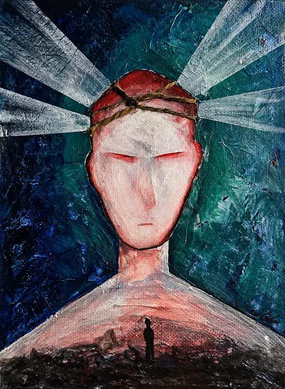
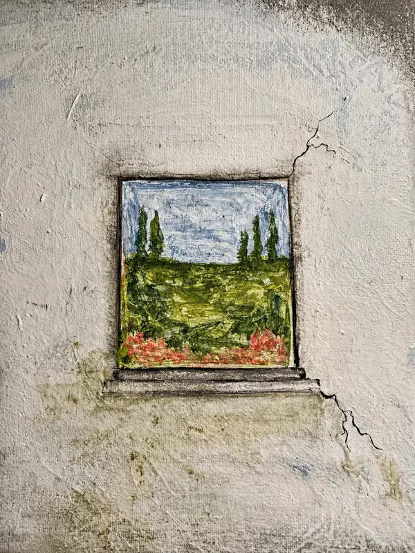
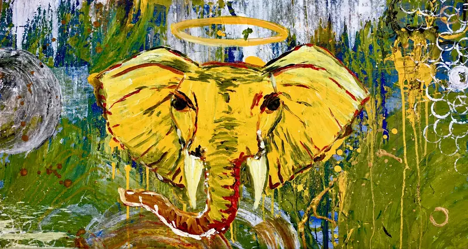
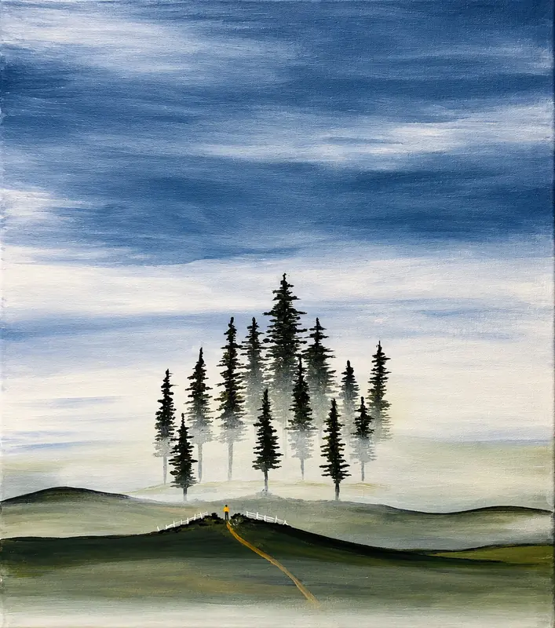
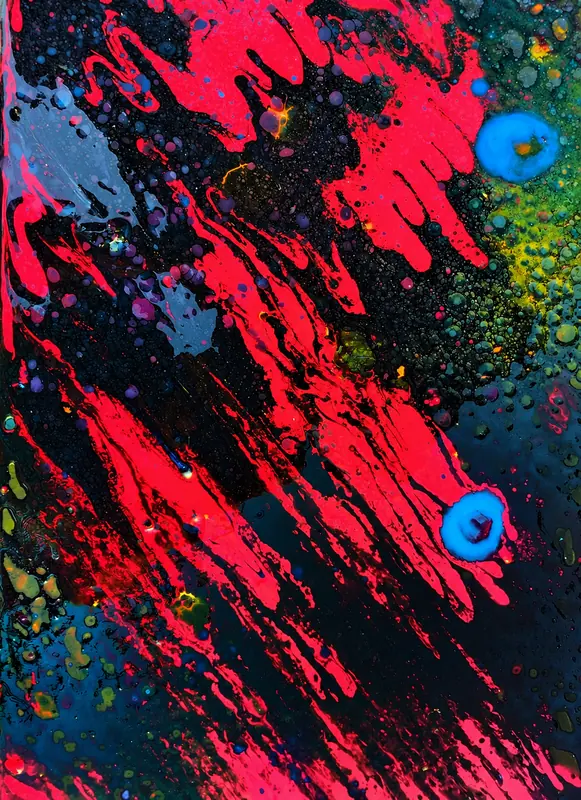
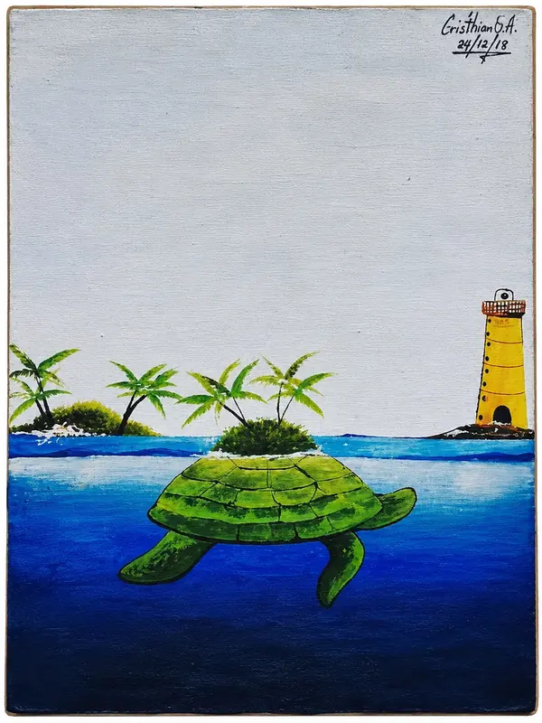
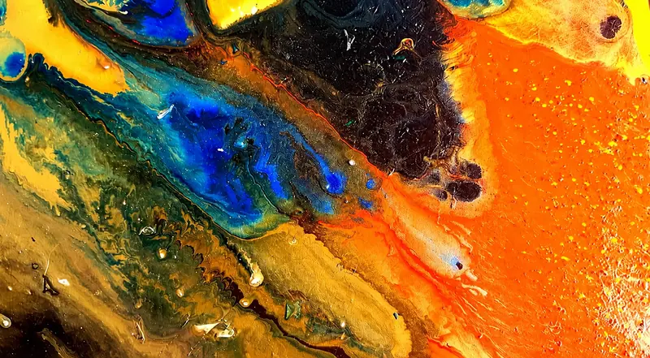

IgniciónAcrílico sobre lienzo · 2026
Capas de acrílico y pinceladas gestuales. Representa el caos que pueden provocar nuestros pensamientos cuando las ideas y emociones se mezclan.
Pintor autodidacta
Una selección de obras nacidas del sentimiento, la imaginación y aquello que no siempre puede decirse con palabras.
Ver exposiciónLas imágenes pueden tardar un poco en cargar debido a la calidad y resolución de las obras. Toca una obra para verla en grande.











“Pinto aquello que no siempre puede decirse, pero que insiste en ser sentido.”
Me considero un pintor de nacimiento. Cuando tenía apenas 6 años, mi padre me ponía a pintar la luna. Con el paso del tiempo he llegado a pensar que quizá aquel gesto de mi infancia fue un pequeño prólogo, un posible designio de Dios que me acercó desde muy temprano al lenguaje de la pintura.
Hoy tengo 26 años y muchas de las obras que he creado a lo largo de mi vida se han perdido. Las pocas que aún conservo conmigo son parte de esta exposición: fragmentos de distintas etapas, emociones y momentos que lograron permanecer.
Me atraen especialmente el surrealismo y el arte abstracto. En ellos encuentro libertad para transformar pensamientos, emociones y experiencias en formas, colores y símbolos. Para mí, pintar no es solamente crear una imagen: es sentirla primero. Pintar con sentimiento es mi pasión.